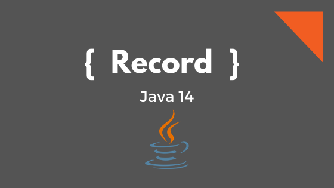

Fala pexadas!! Tudo bom com vocês?
Com a chegada do Java 17, mais uma release LTS (Long-Term Support), apareceram novas e interessantes features. Entre Text blocks, ZGC e Shenandoah (Garbages Collectors), novos métodos na classe String, Sealed Classes, vieram também os Records. Vamos entender um pouco mais sobre Records?
Introdução
Um Record nada mais é que um tipo de classe projetada para gerar um JavaBean tradicional. O ponto que difere das classes existentes, é que ele cria uma classe que possui construtor, métodos acessórios, toString(), hashCode(), equals(), mas é uma classe imutável, ou seja, uma vez criado o objeto, não permite alteração dos dados do objeto.
Mas por que eu deveria considerar usar Records? Aí vai algumas vantagens:
- Imutabilidade
- Diminui a escrita de código
- Remove a necessidade de utilizar bibliotecas para gerar beans, como por exemplo o Lombok
Show me code!
Para ilustrar o que podemos fazer com os Records vamos usar a classe Pessoa abaixo como exemplo.
1 | public class Pessoa { |
Ufa! Terminanos de escrever o nosso bean padrão. O código acima, faz parte do dia a dia do programador Java. Escrevemos essas classes o tempo todo.
Para substituir o código acima com Records, faremos o seguinte código:
1 | public record Pessoa(String nome, Integer idade) {} |
Pois é, com o código acima reproduzimos “praticamente” o mesmo comportamento do primeiro código que fizemos. Para analisar um pouco mellhor, vamos ver o que o compilador Java nos entrega com o Record:
1 | public record Pessoa(String nome, Integer idade) { |
Olhando atentamente, veremos que os métodos Setters não foram criados. Isso é o reflexo da imutabilidade da classe, onde só é possivel passar os dados para um objeto através do construtor.
Perceba também que não aparecem os métodos hash, equals e toString. Acontece que esses métodos serão entrgues de maneira implícita pela JVM, fazendo com que esses métodos sejam implementados utilizando todos os atributos declarados no Record.
Não impede que você possa implementar esses métodos manualmente. Caso essa implementação esteja explicita dentro do seu Record, ele irá sobscrever o método implícito gerado.
Outro ponto que merece ser mencionado, é a possibilidade de se criar regras específicas dentro dos Records. Vou mostrar no exemplo abaixo:
1 | public record Pessoa(String nome, Integer idade) { |
Perceba que no código acima, podemos inserir restrições que serão avaliadas no momento de criação do objeto, dispensando a necessidade de fazer uso de bibliotecas terceiras como Hibernate Validator para validar os campos.
Utilização de libs terceiras
Vocês podem está se perguntando: “Mas o Lombok já faz isso pra mim.”, e de fato faz. O único problema que precisamos deixar claro, é que o Lombok é uma biblioteca terceira, e como toda lib externa é necessário que se escreva testes unitários para garantir que as funcionalidades utilizadas por essa biblioteca estejam funcionando mesmo se passar por uma atualização.
Vamos fazer um exemplo para deixar um pouco mais claro. Suponha que a classe Objeto abaixo esteja utilizando o Lombok.
1 |
|
Nesse caso em específico estamos utilizando a anotação @Getter e precisamos garantir que ela esta funcionalidade está funcionando corretamente na versão em que estamos utilizando. Sendo assim o seguinte teste deveria ser implementado:
1 |
|
Isso não precisa ser feito com o Record por que ele faz parte da biblioteca padrão disponível no Java.lang.
E como ele substitui o DTO?
Aí é que vem a parte mais legal. Na sua função primordial, um DTO (Data Transfer Object) só deveria servir para transportar os dados de um lugar para o outro dentro da aplicação. Sendo assim, não deveriamos ter métodos que alterassem seus valores como fazem os métodos Setters. Então o fato de que Records são serializáveis, poderia substituir facilmente os DTOs convencionais que costumamos usar dentro das aplicações.
Para ilustrar, vamos criar um o mesmo Record feito anteriormente, só que iremos adicionar funcionalidades já conhecida por muitos que utilizam frameworks Java disponíveis no mercado. Vamos fazer uma demostração utilizando o Hibernate Validator.
1 | public record Pessoa( |
No código acima, podemos validar uma entrada (Comando) em um Controller utilizando o framework Spring Boot sendo feita apenas com a anotação @Valid (disponibilizada pelo Hibernate Validator) como no exemplo abaixo:
1 |
|
Perceba que nesse código acima, estamos recebendo nosso Record como o body dessa requisição e ao mesmo tempo estamos retornando ele na resposta da requisição. Mostrando que O JSON-B e JSON-P funcionam perfeitamente com os Records.
E tem pontos negativos?
Como tudo no mundo do desenvolvimento exige trade-off, com o Record não poderia ser diferente. Uma das coisas que podem ser ditas como uma desvantagem são algumas menipulações pelas bibliotecas de Serialização e Deserialização como Jackson.
Caso você precise por exemplo ignorar uma propriedade especifica na serialização usando Jackson por exemplo, seu código deveria ficar mais ou menos assim:
1 | public record Pessoa( |
Porém, esse mesmo código agora não poderá fazer a função de JSON-B (Deserialização de uma requisição por exemplo). O Jackson entende que deve de fato ignorar essa propriedade. Assim ela não será desserializada para dentro do Record.
Conclusão
Os Records agora são uma realidade a partir do Java 14, porem é recomendado que se for utilizar que usem na versão 17, sendo essa a primeira versão LTS que suporta essa funcionalidade.
E quanto a substituir os DTOs, bem, isso cabe a cada desenvolvedor, saber o que pode ser melhor para o seu desenvolvimento. Mas esteja certo que essa funcionalidade dá uma nova cara para padrões como COMMAND, que utiliza DTOs específicos para entrada de dados no contexto da aplicação.